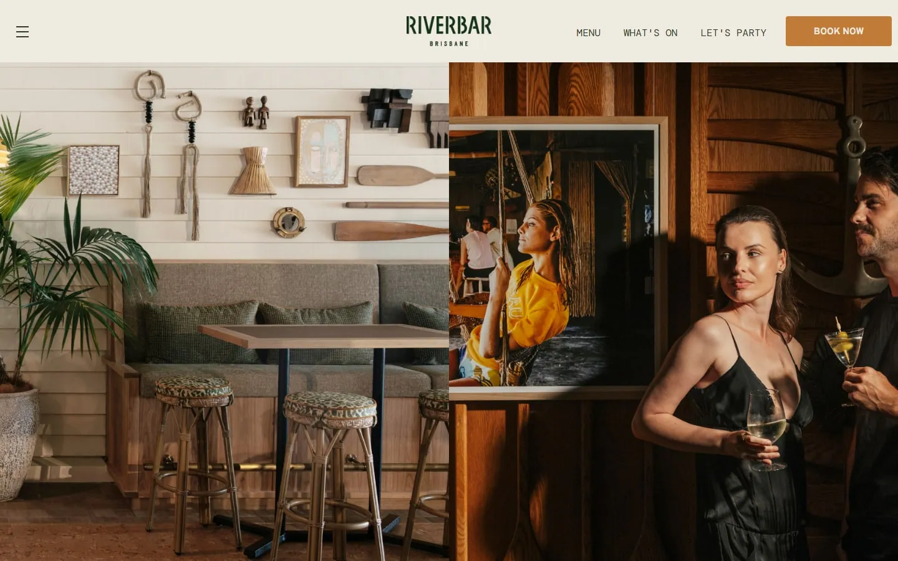
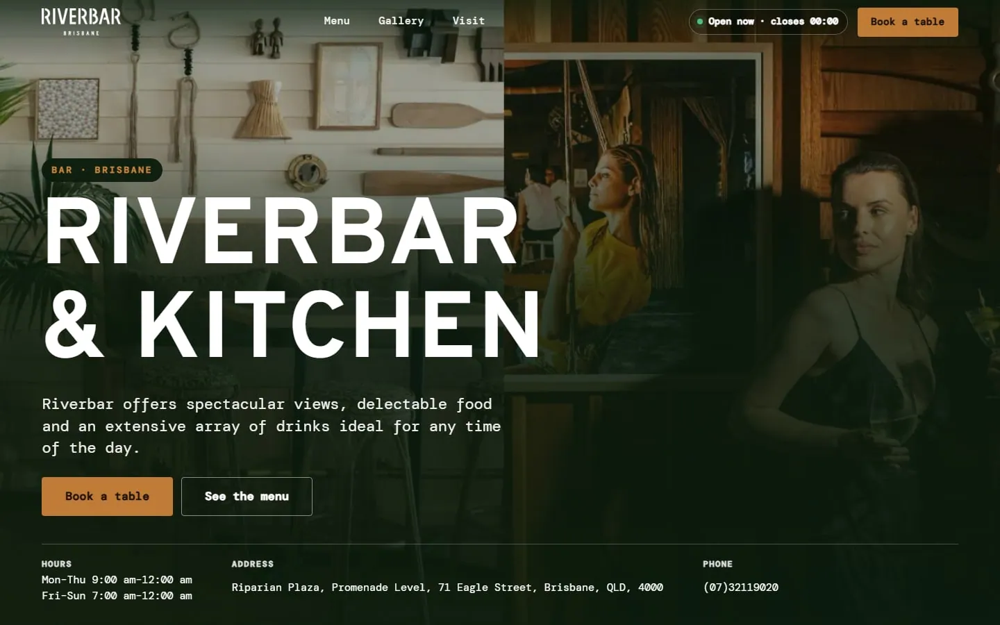
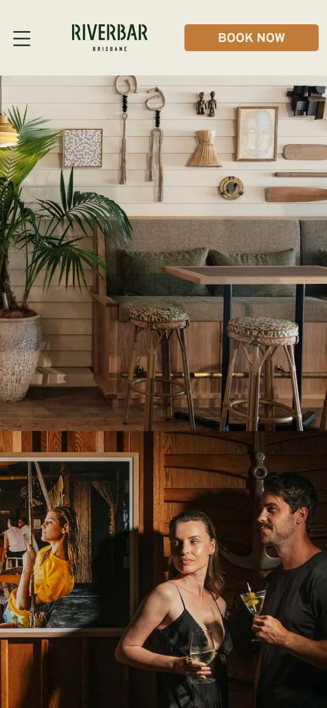
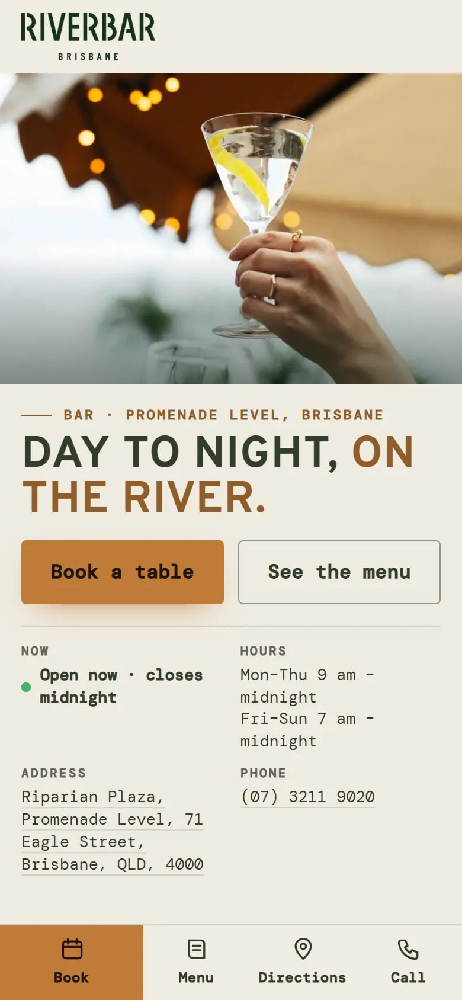

Riverbar & Kitchen




- Slogan
- “Day to night, on the river.”elle (kendi başlığı (sitede h1: DAY TO NIGHT, ON THE RIVER)) — Kendi başlığı zaten çok iyi: kısa, somut, doğru (07:00'den gece yarısına açık, nehir kıyısında). Değiştirilmedi.
- Fotoğraf
- İşletmenin kendi sitesinden 5 fotoğraf; arka planda akan görüntü de bunlar
- Logo
- Kendi logosu, dosya olduğu gibi (logo.png, 1247×440; renk, kırpma, filtre ve oran değişmedi)
- Hareket
- Açılış: logo belirir, slogan sözcük sözcük gelir
Kahraman (WebGL, su: fotoğraflar arası geçiş dalga kırılmasıyla, aşağı kaydırdıkça gün batımı tonu (nehir kıyısı)); her fotoğrafın derinlik haritası var: imleç gezince yakın plan uzak plandan daha çok oynar (2.5D), telefonda yavaşça kendiliğinden döner
Kaydırınca: hikâye satır satır yanar, menü fotoğrafı sekmeyle değişir
Yedek: WebGL yoksa, zayıf cihazda ya da azaltılmış harekette aynı fotoğraflarla sakin CSS akışı (ölçüldü: azaltılmış harekette katman kapalı, hata 0)WebGL katmanı gerçek GPU'da açıldı (ANGLE (Intel, Intel(R) UHD Graphics (0x000046A3)). - Renk
- #c07b36 vurgu #efebe1 zemin #333d2c yazı (sitenin düğme rengi; tüm yazı çiftleri WCAG kontrastını geçer)
- Font
- Başlık: Overpass → Overpass (aynı font, Google Fonts); metin: DM Mono → DM Mono
- Menü
- 42 kalem, kendi adları ve fiyatlarıyla
- Saat
- Kendi saatleri; "şimdi açık" rozeti dahil
- Kapı
- hazır · masaüstü ve telefonda yatay taşma yok · bozuk görsel yok · ilk ekran yazı kontrastı yeterli · dış istek yok